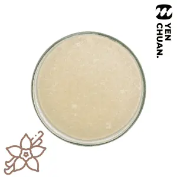
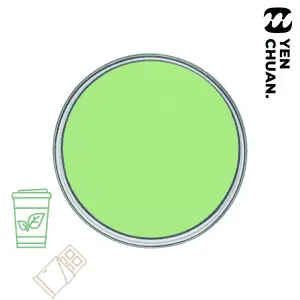
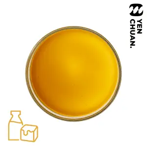
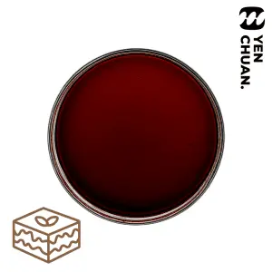
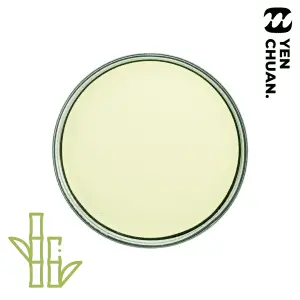
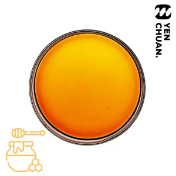
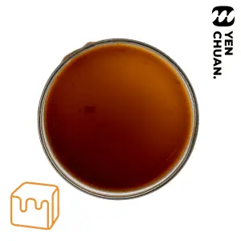

經典糖漿
共 16 項商品；名稱保留原站英文，避免規格與品項認錯。

Vanilla Syrup經典糖漿 · 商品原名（英文）
Matcha white chocolate flavored syrup經典糖漿 · 商品原名（英文） Chocolate flavored syrup經典糖漿 · 商品原名（英文）Sea salt caramel flavored syrup經典糖漿 · 商品原名（英文）
Chocolate flavored syrup經典糖漿 · 商品原名（英文）Sea salt caramel flavored syrup經典糖漿 · 商品原名（英文）
Thick milk caramel flavored syrup經典糖漿 · 商品原名（英文） Tiger Dot syrup經典糖漿 · 商品原名（英文）
Tiger Dot syrup經典糖漿 · 商品原名（英文）
Tiramisu syrup糖漿 · 商品原名（英文） Taro syrup經典糖漿 · 商品原名（英文）
Taro syrup經典糖漿 · 商品原名（英文）
Sugar cane juice syrup經典糖漿 · 商品原名（英文） Rose syrup B經典糖漿 · 商品原名（英文）Rose syrup A經典糖漿 · 商品原名（英文）Pudding caramel syrup糖漿 · 商品原名（英文）
Rose syrup B經典糖漿 · 商品原名（英文）Rose syrup A經典糖漿 · 商品原名（英文）Pudding caramel syrup糖漿 · 商品原名（英文）
Honey syrup經典糖漿 · 商品原名（英文） Hazelnut syrup經典糖漿 · 商品原名（英文）
Hazelnut syrup經典糖漿 · 商品原名（英文）
Caramel syrup經典糖漿 · 商品原名（英文） Brown sugar syrup經典糖漿 · 商品原名（英文）
Brown sugar syrup經典糖漿 · 商品原名（英文）